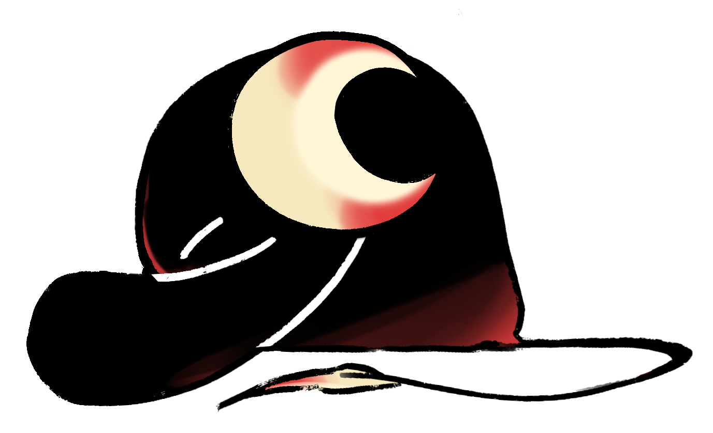

Click a folder to open its sites. Type that name in task to open them on lock-in too.
Save this page (or paste a URL) into folders:
click to activate lock-in mode

Are you sure?
Ending early will make the bunny sad. (It does not actually die.)
Session complete